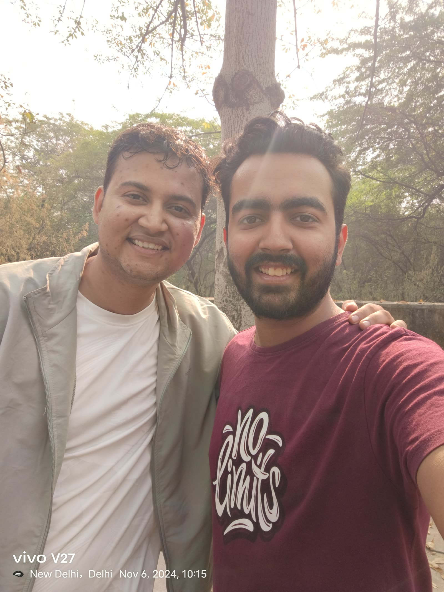
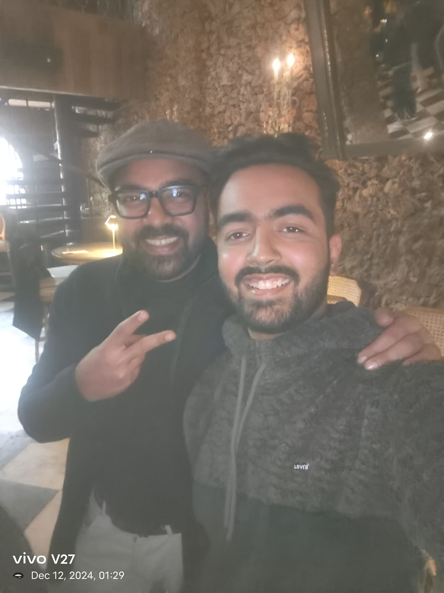
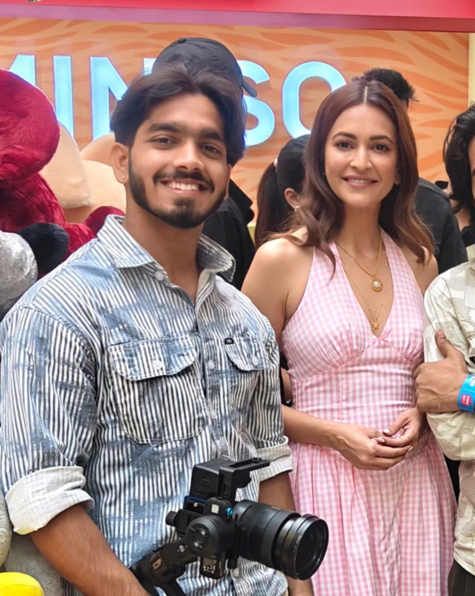
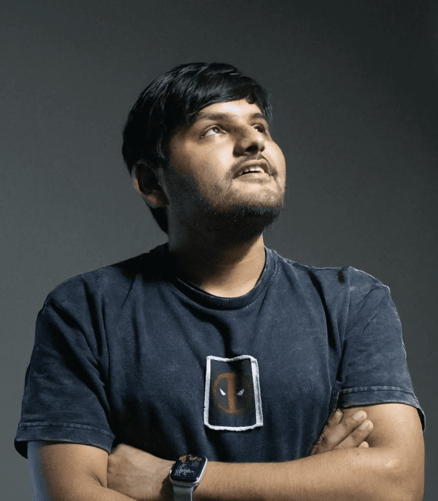

/01
Ad Films
Meta ad films and brand films engineered for scroll-stopping performance directed and shot with media intent in every frame.
For brands that need more sales, more traffic, more walk-ins, stronger recall, and higher conversions across every serious growth industry.
One integrated production + performance team. Built for conversion where cinematics, storytelling, and marketing intent work together to drive results.
Meta ad films and brand films engineered for scroll-stopping performance directed and shot with media intent in every frame.
Multi-variant video, static, and UGC production systems designed to learn, iterate, and scale winning hooks across the funnel.
AI pipelines that expand production capacity generating variations, testing faster, and scaling winning formats continuously.
Raw frames from production days directing, lighting, framing, and the small calls that decide whether a film performs.
Talent that already commands attention captured for films built to convert.



Every output is designed through production + performance thinking turning attention into measurable outcomes from first-frame hook to final conversion.
Creative gets shot in isolation. Media gets run in isolation. Strategy is decided separately. Execution is disconnected. Our work is powered by a single integrated system.
The same team carries the brand from positioning to production to performance no handoffs, no lost context.
We are obsessively focused on creative direction, filmmaking, and design not as decoration, but as performance leverage. Positioning decides most of the outcome before the camera even rolls.
Specialists in each domain working as one production system.

At the start, to scale. Or after they’ve already tried everything production teams that made beautiful videos that didn’t convert, performance teams that ran ads without strong creatives, internal teams that couldn’t sustain consistent output.
What they’re left with is the same problem: effort is high, output is low, results are inconsistent.
Most brands confuse consistency with repetition. Real consistency is the stability of meaning across time, not the repetition of the same output.
Relevance is not about chasing trends it’s about continuously adjusting how your brand fits into what people already believe matters in that moment.
The strongest brands don’t frequently change what they say. They refine how it lands as attention, context, and culture shift around them.
Markets don’t reward creativity in isolation. They reward creative memory the ease with which people recognize and recall you without effort.
Over time, inconsistency doesn’t create noise. It creates cognitive fatigue, where people stop engaging without even realizing why.
Relevance rarely breaks suddenly; it decays quietly. That’s why most brands only notice it after performance drops.
One conversation. We’ll show you what your funnel looks like with production + performance + AI as a single system.
Start the conversation